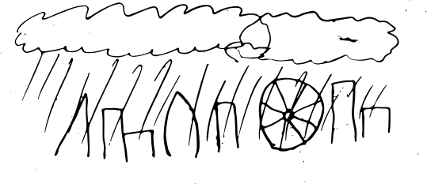

Pitch
My project pitch revolves around the idea of "Live Weather", to allow the user to not only know the weather anywhere in the world, but also to see it via a simulated animation. The app starts by sourcing a 3d panorama image from google maps or another source, and displays it on the screen allowing the user to use their device as a "view window" into another location, and they can pan around the scene by moving their device in a 360 degree spherical motion.
The app makes use of webGL canvas to dynamically simulate weather effects on top of a sourced image. Because of this it can update in real time and adjust the parametres to create a realistic effect, without jarring transitions.

The also has "future sight", allowing the user to swipe on their phone to look at the weather in an hour or 12. This plays into the dynamic updating of the weather effects allowing it to smoothly slow into a drizzle and come to a complete stop if need be.